FORTINET ENTERPRISE NETWORKING & SECURITY
Daily Study Report & 50-Question Examination
Sunday, November 8, 2026 · Documentation-led engineering lessons, feature mechanics, evidence and operational troubleshooting.
This report covers FortiGate transparent conditional DNS forwarding; FortiManager per-policy workspace locking; FortiAnalyzer cloud archive offload; FortiSwitch dual-signed image verification; FortiAP Wi-Fi 7 MLO; FortiNAC 9.4 API/HTTPS SMS Gateway; FortiNAC-F FortiLink credential planes; FortiAuthenticator Intune SCEP and Entra ID EAP-TLS; FortiPAM agentless web launchers; FortiSIEM AWS Security Hub ingestion; FortiSASE Inline-CASB tenant restriction; and Secure SD-WAN Setup Wizard dependencies.
Run Status — PARTIAL
Generation and content validation: PASS. Twelve substantive lessons (8,225 words; 622–756 words each), all 12 mandatory product targets, exactly 50 graded MCQs, 200 choice-specific explanations, and 24 mechanism-specific diagrams were generated. Answer positions are balanced 13/13/12/12 and the maximum choice-length difference is two words.
Discovery: PASS. The 204-record rolling exclusion inventory (192 published lesson records and 12 candidate-only exclusions) was committed and read back before topic selection. Twenty-one dated report HTMLs were inspected. All 12 selected mechanism, workflow, failure, evidence, remediation, question and diagram fingerprints passed semantic comparison.
Research: PARTIAL. All 12 Community product areas were searched. One directly matched recent/materially updated scenario was verified for FortiNAC-F (article updated November 4, 2026). No directly matched recent scenario was verified for the other eleven selected lesson topics; older and unrelated items were not substituted. The FortiNAC 9.4 Email/SMS detail page returned HTTP 403, while the official 9.4 New Features summary confirms API/HTTPS SMS gateway support. The FortiSwitch release note does not publish the cryptographic validation algorithm, so the lesson describes only documented trust/verification behavior.
GitHub publication and read-back: PASS. The dated report, index, research sidecars, lesson/question banks, status/validation files, all 12 standalone SVGs and all 12 editable draw.io files were written and read back. Draw.io XML was corrected to escape HTML line breaks and all 12 files were read back again with valid mxfile/mxGraphModel structure.
GitHub Pages: FAILED. Both the dated report URL and the site root were attempted after publication and were inaccessible through the verification endpoint. The GitHub main-branch report remains readable. Retry Pages verification after the deployment endpoint is accessible; do not interpret a failed Pages check as a failed GitHub commit.
Email: not attempted because notifications and email are disabled. Scheduler: no changes were made.
Remediation: retry Pages verification; continue targeted recent Community searches for the eleven unmatched product areas; retry the FortiNAC Email/SMS guide; preserve the published report and do not suppress future daily outcomes because of these gaps.
Discovery and quality gates
- Rolling 30-day inventory: 204 records (192 published lesson records and 12 candidate-only exclusions).
- Actual dated report HTMLs inspected: 21, plus status/candidate artifacts.
- All 12 candidates compared against mechanism, workflow, failure, evidence, remediation, question and diagram fingerprints.
- Community sweep: 12/12 product areas searched; one directly matched recent/materially updated scenario verified.
- Exam validation: exactly 50 questions, four options each, 200 per-choice explanations, balanced answer positions (13/13/12/12), maximum option-length difference two words.
Community coverage gap: no directly matched recent scenario was verified for FortiGate, FortiManager, FortiAnalyzer, FortiSwitch, FortiAP/Wireless, FortiNAC, FortiAuthenticator, FortiPAM, FortiSIEM, FortiSASE or Secure SD-WAN. Older or unrelated findings were not substituted. The FortiNAC-F article was originally posted September 18 and materially updated November 4, 2026.
Lesson navigation
- FortiGate — Transparent conditional DNS forwarding: zone-matched interception, local answers, and site-local resolver selection
- FortiManager — Per-policy workspace locking: granular concurrent-edit isolation and policy-sequence ownership
- FortiAnalyzer — Cloud archive offload with Storage Fabric Connectors: connector identity, CA trust, license gate, and remote-path binding
- FortiSwitch — FortiLink-managed dual-signed FortiSwitchOS image verification: controller validation and pre-upgrade trust evidence
- FortiAP/Wireless — Wi-Fi 7 Multi-Link Operation: MLD link association, WPA3 prerequisites, radio-profile binding, and standalone behavior
- FortiNAC — FortiNAC 9.4 API/HTTPS SMS Gateway: connector-driven notifications and sponsor LDAP group mapping
- FortiNAC-F — FortiLink integration credential planes: REST API token, SSH/CLI, SNMPv3, and separate RADIUS enforcement
- FortiAuthenticator — SCEP with Microsoft Intune and Entra ID-backed EAP-TLS: OAuth challenge generation, certificate binding, and SAML group-to-RADIUS policy
- FortiPAM — FortiPAM 1.9 agentless web launchers: browser tab-sharing consent, recording upload, and launcher limitations
- FortiSIEM — AWS Security Hub integration: regional findings ingestion, SDK credential scope, and FortiSIEM discovery
- FortiSASE — Inline-CASB application detection and SaaS tenant restriction: deep inspection, HTTP header insertion, and per-application overrides
- Secure SD-WAN — SD-WAN Setup Wizard: license-gated generation of zone, members, SLA and service rule with a separate default-route step
Transparent conditional DNS forwarding: zone-matched interception, local answers, and site-local resolver selection
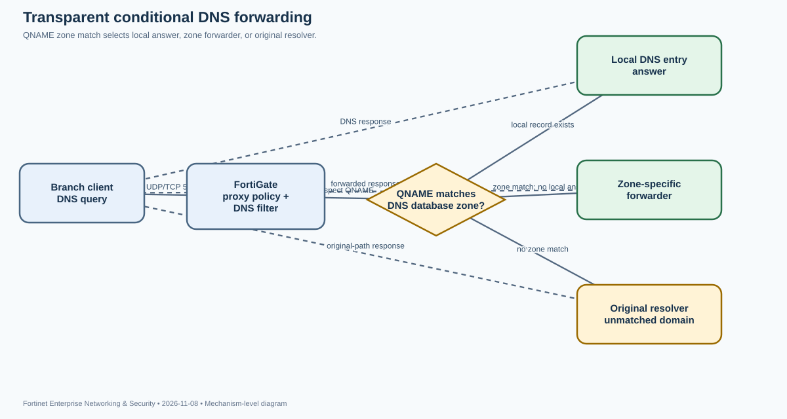
Why this feature exists. A branch may send all DNS queries to a central resolver across an IPsec tunnel. That is correct for corporate namespace ownership, but it can produce poor application placement when a SaaS name should resolve to a nearby regional edge. Changing every endpoint's DNS server is often impractical. A transparent conditional DNS forwarder lets FortiGate intercept DNS traffic that is already addressed to another resolver and make a domain-specific decision without changing the client configuration.
Objects and decision path. The feature uses a DNS database zone, DNS entries, an optional zone-specific forwarder, a DNS filter profile, and a proxy-based firewall policy. The zone's domain name creates the matching scope. The FortiGate DNS proxy parses the query and builds filters from configured zone domains. When a query matches, the proxy consults the zone data and forwarder settings. A locally configured record can answer the query directly. If no local answer is available and the zone has a forwarder, the FortiGate sends a new DNS request to that resolver. If no configured zone matches, the original destination path remains available. This is not a global replacement for the client's DNS server; it is a selective interception and resolution decision.
Authoritative is a consequential setting. In the documented regional example, the zone is not authoritative. That allows the local FortiGate to use its local entry or the configured forwarder rather than claiming to be the sole source for the entire namespace. An authoritative zone prevents upstream lookup when the requested record is absent and can return a negative answer. Use it only when the FortiGate is intended to own the zone. For conditional forwarding to a central or local resolver, disabling authoritative is normally the expected behavior.
Configuration sequence. First enable DNS Database under System > Feature Visibility; DNS server options are hidden by default. Create a DNS database such as SaaS_applications, set its domain (for example microsoft.com), disable Authoritative, and enter the local forwarder. Add only the local records that should be answered at the branch. If the forwarder is reached over a VPN, set a source IP that belongs to the correct FortiGate routing context; the guide exposes source-ip and IPv6 equivalents. Attach the database to a DNS filter profile with set transparent-dns-database, then apply that DNS filter profile to the firewall policy carrying the client DNS traffic. The feature requires proxy inspection. A flow-based policy may pass DNS without invoking this conditional DNS decision.
config system dns-database
edit "SaaS_applications"
set domain "microsoft.com"
set authoritative disable
set forwarder "172.16.200.3"
set source-ip 13.13.13.2
config dns-entry
edit 1
set hostname "office"
set ip 172.16.200.55
next
end
next
end
config dnsfilter profile
edit "SaaS"
set transparent-dns-database "SaaS_applications"
next
endVerification is a three-way test, not one successful lookup. Query a locally defined name such as office.microsoft.com; the response should contain the FortiGate's local address. Query another name in the same zone that is not locally defined; the answer should come from the zone forwarder. Query an unrelated domain such as facebook.com; it should continue to the original resolver. These three results prove the local-answer, zone-forwarder, and unmatched-query paths respectively. A successful nslookup alone does not prove which resolver answered. Capture DNS on the FortiGate to confirm whether the proxy emits a separate request to the forwarder and inspect the source IP used for that request.
Operational failure isolation. If the local record works but the forwarder path fails, inspect forwarder reachability, route selection, VPN source address, and the zone's authoritative setting. If neither local nor forwarded behavior occurs, confirm that the DNS database is referenced by the active DNS filter profile and that the matching firewall policy is proxy-based. If only one VDOM or interface behaves differently, verify the feature visibility and policy placement in that VDOM. The feature is not supported on FortiGate models with 2 GB RAM or less; do not spend time debugging policy objects on an unsupported platform. IPv6 conditional forwarding uses corresponding IPv6 forwarder and source-address fields.
Design implication. This is useful when the network team controls the FortiGate but not endpoint resolver settings. It is not a substitute for authoritative enterprise DNS governance, DNSSEC design, or endpoint DNS policy. Keep zone scopes narrow, document who owns each local record, and test positive, negative, and unmatched names before enabling the policy for a site.
Per-policy workspace locking: granular concurrent-edit isolation and policy-sequence ownership
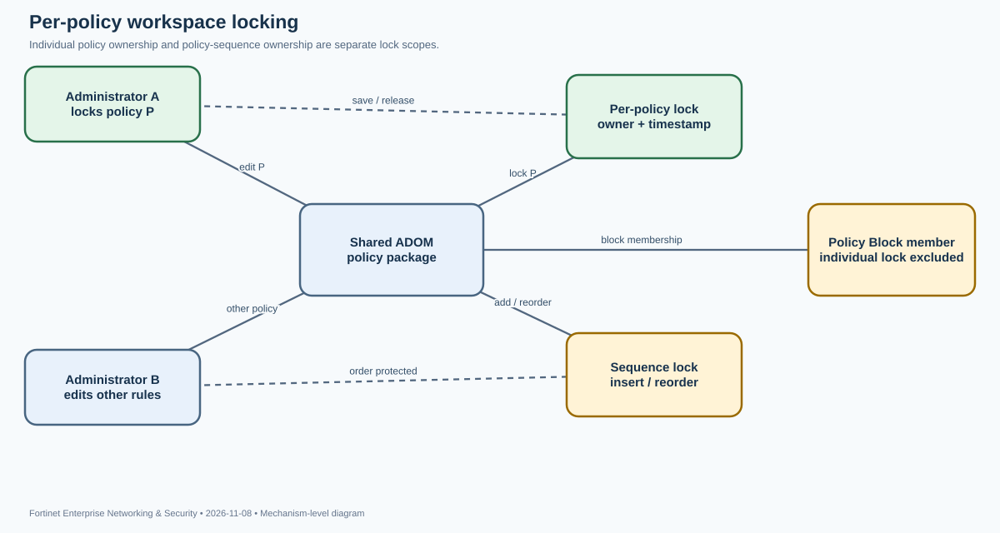
Problem being solved. In a shared FortiManager environment, multiple administrators may work in the same ADOM and policy package. Locking the whole ADOM or package for every small rule change serializes too much work. Workspace mode supports narrower ownership: an administrator can lock one policy while leaving unrelated policies available to colleagues. This is a concurrency-control mechanism for the FortiManager configuration database; it is not the same as Workflow Mode approval and it does not install configuration on a FortiGate.
Three different lock scopes must be distinguished. An ADOM lock protects the broad administrative domain. A policy-package lock protects the package. Per-policy lock protects one policy entry. When Per-Policy Lock is enabled, the administrator can edit a policy without taking the whole package lock. The padlock is an ownership indicator: green means the current administrator holds the lock; red means another administrator holds it. Hovering over the lock exposes the owner and timestamp. Other administrators cannot modify the locked policy, and cannot lock its containing package or ADOM without forcing the lock holder to disconnect.
Policy ordering is a separate shared resource. Adding two or more policies creates a sequence lock at the top of the package. That lock protects rule insertion and ordering, because policy order changes the first-match decision for traffic. While the sequence lock exists, other administrators cannot create or insert policies, although they may still edit existing policies. The sequence lock disappears after the ordering change is saved. Do not interpret a sequence lock as proof that every policy in the package is locked; it is an ordering guard.
Enablement and workflow. Enable Workspace mode under System Settings > Advanced > Workspace, then enable Per-Policy Lock. The documented CLI control is:
config system global
set per-policy-lock enable
endConfirm the correct ADOM, open Policy & Objects > Policy Packages, select the package, and edit the intended policy. Save the edit so the lock state is persisted. A padlock next to the policy indicates the lock. Use the tooltip to verify the owner and acquisition time before asking another administrator to wait or force-disconnect. Keep the lock duration short and release ownership as soon as the change is complete.
Important exception: Policy Blocks. A policy that is used by a Policy Block cannot be individually locked. The restriction is structural, not a transient GUI fault. If the policy belongs to a block, use the appropriate broader lock scope and coordinate changes to the reusable block rather than repeatedly trying to acquire a per-policy lock. A policy lock also does not validate the policy's references, guarantee that the rule is correct, or make the installation transaction atomic.
What to verify. Use two administrator sessions in a lab. Administrator A locks one policy and changes a description. Administrator B should see the red lock and be unable to modify that policy, while unrelated unlocked policies remain editable. Hover the padlock and compare the displayed owner/time. Then have Administrator A add or reorder multiple policies; Administrator B should see the sequence lock at the package level. After A saves, the sequence lock should disappear. Finally test a policy referenced by a Policy Block and confirm that per-policy lock is unavailable.
Troubleshooting implications. If every edit is blocked, first determine whether the ADOM or package is locked, rather than assuming the individual policy lock is stale. If only insert/reorder operations are blocked, inspect the sequence lock. If the lock cannot be enabled, confirm Workspace mode and the global per-policy setting. If the policy is part of a Policy Block, switch to the supported lock scope. A red padlock is evidence of another administrator's ownership, not a configuration error. The safe recovery path is to contact the owner, inspect the timestamp and active work, and use a force-disconnect only under an agreed change-control procedure.
Operational takeaway. Per-policy locking reduces contention in large ADOMs, but it works only when teams understand the distinction between editing a rule, changing rule order, and modifying a reusable Policy Block. The lock is a coordination primitive; peer review, policy validation, and a separate installation plan remain necessary.
Cloud archive offload with Storage Fabric Connectors: connector identity, CA trust, license gate, and remote-path binding
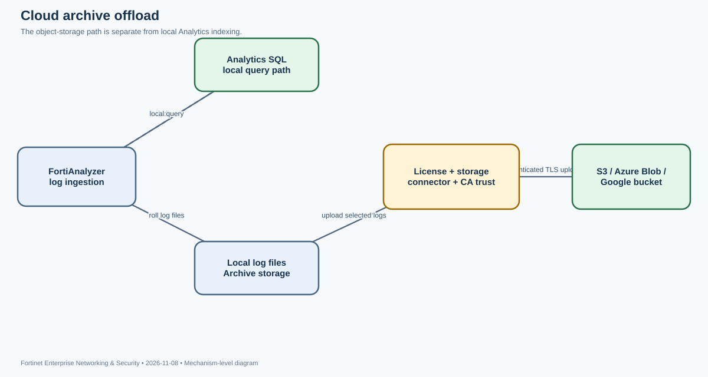
Purpose and boundary. FortiAnalyzer can upload logs to cloud object storage through a Fabric storage connector. This provides an off-box copy path for log files and can support longer-term retention or external archive workflows. It is not the same as sending real-time syslog to a SIEM, fetching logs from another Analyzer, or moving the Analytics SQL database into object storage. The feature is configured under Device Log Settings and has an explicit entitlement and certificate-trust boundary.
Objects and relationships. The configuration has four dependencies: a valid Storage Connector Service license, an enabled Fabric storage connector, a provider-side bucket or container, and the provider CA certificates trusted by FortiAnalyzer. The connector represents the cloud account and access method. The remote path identifies the bucket/container destination. The upload setting binds a named cloud-storage target to that connector. Fortinet documents connectors for Amazon S3, Azure Blob, and Google Cloud. The cloud provider's CA certificate chain must be imported before FortiAnalyzer can establish the required TLS connection.
Provisioning sequence. Create the storage connector under Fabric View or System Settings > Fabric Management, depending on the guide version. Select the provider type and configure the provider-specific identity: for S3, provider, region, access key ID and secret access key; for Azure Blob, storage account and account key; for Google, project number, service-account credentials and cloud location. Enable the connector. Import the CA certificates required by the provider; a public root alone may not be enough if the service chain uses an intermediate or third-party CA. Then go to System Settings > Advanced > Device Log Settings, enable Upload logs to cloud storage, enter a name, select the Fabric Connector, and enter the remote bucket/container path.
License is a hard prerequisite. Fortinet explicitly requires a valid Storage Connector Service license before enabling the feature. If the option is unavailable or upload does not start, check the License Information widget first. Do not mistake the presence of a configured connector for entitlement to upload. The connector can exist while the service license is missing or expired.
Operational flow. FortiAnalyzer continues to receive and process device logs using its normal ingestion and storage pipeline. The cloud-upload setting provides a destination for log files. The storage connector authenticates to the provider and the remote path selects the bucket/container. The CA store validates the provider's TLS certificate chain. Each of these steps can fail independently: FortiAnalyzer may ingest logs successfully while cloud upload fails, because ingestion and offload are separate operations. Conversely, an object appearing in the bucket proves that an upload occurred; it does not prove that the log is indexed in Analytics or that an analyst can query it in the same way as local Analytics data.
Verification. Confirm the license is valid, the connector is enabled, the provider region and identity are correct, and the upload setting references the intended connector and remote path. On the provider side, inspect the bucket/container object list and audit events for the FortiAnalyzer identity. Check timestamps and object growth rather than assuming a successful GUI save means an upload completed. If provider logs show an authentication denial, validate access-key scope and bucket permissions. If TLS negotiation fails, inspect the imported CA chain and system time. If the upload succeeds to the wrong location, verify the remote path and provider account/region rather than changing the log receiver configuration.
Failure isolation. A missing Storage Connector Service license is an entitlement issue. A disabled connector or invalid access key is an identity/configuration issue. A missing CA certificate is a trust failure. An incorrect remote path is a destination error. A network firewall or DNS issue is a transport problem. Keep these categories separate: changing the provider secret will not fix a missing CA, and importing a CA will not grant bucket write permission. Use a dedicated provider identity with only the required destination permissions, protect the secret material, and avoid embedding credentials in scripts or exported diagnostics.
Retention and recovery caveat. Cloud upload should be treated as a separate copy/transfer path, not as proof that local retention can be shortened. Define the retention and restore process independently, confirm object lifecycle rules with the cloud owner, and test retrieval before relying on the cloud copy for audit or incident response. The public guide describes the connector and upload prerequisites but does not define every provider's object-lock or lifecycle semantics; those must be validated against the selected provider.
FortiLink-managed dual-signed FortiSwitchOS image verification: controller validation and pre-upgrade trust evidence
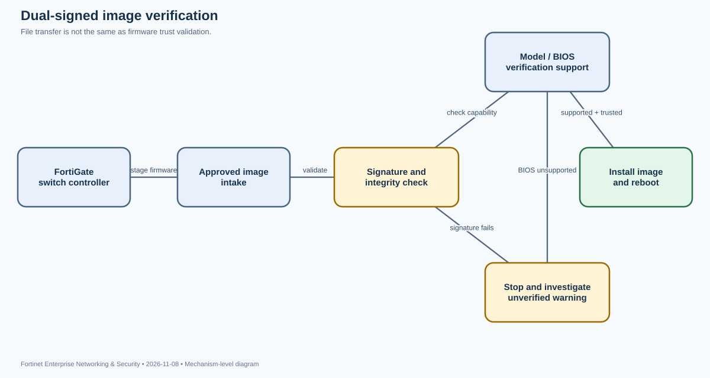
Why signature verification matters. A firmware upload is not merely a file-transfer operation. The switch must decide whether the image is trusted and appropriate before it becomes the active operating system. FortiSwitchOS exposes image-integrity verification in the GUI, and FortiOS 7.6.5 adds switch-controller support for OS image signature verification for dual-signed images. In a FortiLink deployment, the controller participates in the managed upgrade path, so administrators should understand what the trust warning means before pushing an image to a fleet.
What the documented feature proves. The 7.6.5 FortiOS release notes state that the switch controller provides OS image signature verification for dual-signed images. The FortiSwitchOS Administration Guide separately describes GUI image verification behavior. It notes that model support must be checked in the FortiSwitch feature matrix and that a BIOS version without image-signature-verification support causes a warning at login. Uploading an unverified image produces a “WARNING: This firmware failed signature validation” message. Logging in to a switch running an unverified image produces “Unverified Image Detected” and a red warning indicator in the title bar.
Do not invent the cryptographic internals. The public release note does not specify the signature algorithm, certificate chain, key rotation, or exact dual-signature validation sequence. Operationally, treat the controller's verification result as a trust gate and use Fortinet's supported image and model compatibility guidance. Do not assume that a successful download, matching filename, or locally computed checksum is equivalent to a successful vendor signature validation.
Upgrade workflow. Before selecting an image, confirm the exact switch model, FortiSwitchOS release path, FortiGate/FortiOS compatibility, and feature-matrix support. Confirm that the switch BIOS supports image signature verification. In a managed environment, stage the approved firmware through the FortiGate switch controller and observe the verification result before proceeding with installation. If the GUI reports a failed signature, stop. Obtain the image again from the official Fortinet distribution path and verify that the file matches the intended model and release. Do not attempt to bypass the warning simply to keep an upgrade campaign moving.
Evidence and interpretation. A “firmware failed signature validation” message proves the image did not pass the device's verification check; it does not by itself prove that the file is malicious. Possible causes include a corrupted download, unsupported image, model mismatch, or a verification-support limitation. “Unverified Image Detected” proves that the running image is not being recognized as verified; it does not tell you whether the device's BIOS lacks support or whether the image itself failed. The feature matrix and BIOS capability must be checked separately. A successful controller transfer proves only that the image reached the device, not that it is trusted.
Troubleshooting sequence. Capture the exact model, current FortiSwitchOS, FortiOS controller version, image filename and checksum, BIOS version, and GUI warning text. Check whether the model supports signature verification. If BIOS support is absent, follow the supported BIOS/firmware upgrade path for that model; do not infer that a warning can be safely ignored. If the model supports verification, re-download the correct official image and repeat validation. If the image is dual-signed and the controller release is older than the required 7.6.5 support, confirm the controller-side release requirement before concluding that the switch image is defective.
Fleet and HA considerations. Validate a representative switch model and hardware revision before a large rollout. Mixed switch fleets can have different BIOS and image-verification capabilities. A successful upgrade on one model does not prove that another model supports the same image or verification path. In a FortiLink topology, maintain a staged rollout and verify that the controller sees each switch as managed and reachable before scheduling firmware. If a switch reports an unverified image after reboot, preserve the warning and device details for investigation rather than immediately repeating the upgrade.
Operational takeaway. Signature verification is a supply-chain trust control. Treat its warning state as actionable evidence, distinguish image-transfer success from image-integrity success, and let the model/BIOS feature matrix determine the supported path. The documentation does not expose the internal signature algorithm, so keep the lesson grounded in the observable validation boundary rather than guessing at cryptographic implementation details.
Wi-Fi 7 Multi-Link Operation: MLD link association, WPA3 prerequisites, radio-profile binding, and standalone behavior
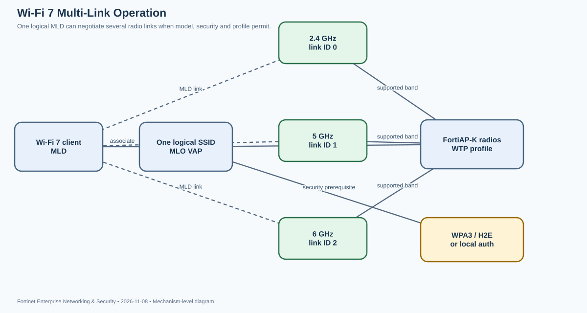
What MLO changes. Wi-Fi 7 Multi-Link Operation (MLO) allows a compatible client and access point to use multiple radio links as one logical multi-link device. Rather than treating 2.4, 5 and 6 GHz as mutually exclusive association choices, an MLO-capable station can transmit and receive over multiple supported links. The design can increase aggregate throughput, reduce latency under contention, and improve resilience when one band is busy. It does not mean every client automatically uses every AP radio, nor does it guarantee that all bands are available on every model.
Model and firmware boundaries. Fortinet documents MLO support on FortiAP-K models running FAP 7.6.3 and later. The supported-radio table is model-specific. FAP-231K, FAP-23JK, FAP-241K, FAP-243K and FAP-244K support 2.4/5/6-GHz MLO; FAP-441K and FAP-443K support 5 and 6 GHz but their 2.4-GHz radio does not support Wi-Fi 7 MLO. FAP-221K and FAP-222KL have their own 2.4/5-GHz capability set. Validate the exact model and radio, not merely the K-series label.
Security prerequisites. The documented VAP security modes are WPA3-SAE or WPA3 Enterprise Only; OWE is also listed in the CLI configuration options. When using WPA3-SAE, Hash-to-Element (H2E) only must be enabled. The guide shows that FortiOS automatically enables sae-h2e-only when security is set to WPA3-SAE. MLO is a VAP property, but the VAP must then be attached to the intended radios in the WTP profile. Enabling MLO on an unused VAP does not change the live SSID.
config wireless-controller vap
edit "VAP1"
set ssid "VAP1"
set security wpa3-sae
set sae-h2e-only enable
set mlo enable
next
end
config wireless-controller wtp-profile
edit "FAP241K-default"
config radio-2
set band 802.11be-5G
set vap-all manual
set vaps "VAP1"
end
config radio-3
set band 802.11ax-6G 802.11be-6G
set vap-all manual
set vaps "VAP1"
end
next
endStandalone operation is a separate mode. On supported K-series APs running FAP 7.6.5 or later, MLO can operate in local standalone mode. Authentication is handled locally on the AP, so the AP can continue providing MLO connectivity without its FortiGate controller. This requires a bridge-mode SSID and the local standalone, local bridging, and local authentication settings. A tunnel-mode VAP that depends on the controller is not equivalent to a locally bridged standalone VAP. Treat the two operating models as different traffic and authentication paths.
Verification. From FortiGate, run diagnose wpa wpad mld. The example output includes an MLD entry, num_links, and individual link_id values. A result showing three links is evidence that the MLD has three associated links; a client merely appearing in the Wi-Fi client table is not proof of multi-link operation. On the AP, use vcfg | grep mlo to confirm that the VAP has MLO enabled. Compare the observed link count with the AP model's supported-radio matrix and the radios to which the VAP is assigned.
Failure isolation. If the client connects but only one link appears, verify client MLO capability, AP model/radio support, FAP firmware, WPA3/H2E configuration, and WTP profile binding. If the standalone SSID is not usable after controller loss, verify that the VAP is bridge mode and that local standalone, local bridging, and local authentication are enabled. If the 2.4-GHz link is absent on FAP-441K or FAP-443K, that is a documented hardware limitation, not necessarily a radio fault. Check channel and radio configuration only after these prerequisites are satisfied.
Operational implications. MLO introduces a multi-link association state that should be included in client testing and wireless assurance. Validate roaming, power-save behavior, airtime contention, and application latency with MLO-capable clients. Do not compare a single-link client to a three-link MLD and attribute the difference solely to RF quality. The key evidence is the negotiated MLD link set, not just RSSI or an SSID association event.
FortiNAC 9.4 API/HTTPS SMS Gateway: connector-driven notifications and sponsor LDAP group mapping
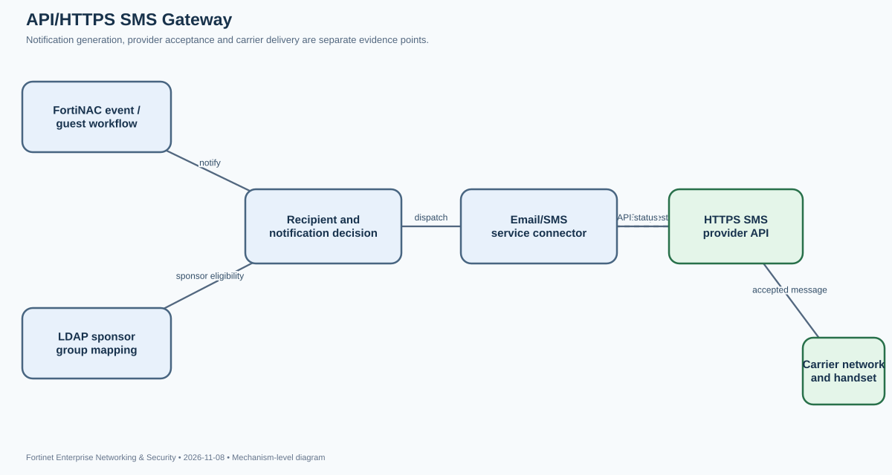
Why the 9.4 change matters. FortiNAC notifications can reach administrators, guests, and users by SMS. Earlier releases relied on Mail-to-SMS gateway behavior. FortiNAC 9.4 adds API/HTTPS-based SMS gateway integration, including built-in integration with cloud providers such as Twilio. The same 9.4 feature summary calls out LDAP group mapping for sponsors. This is useful when guest workflows or sponsor operations require reliable messaging without depending on a carrier-specific email-to-SMS address.
Architecture and objects. The relevant object is the Email/SMS service connector under Network > Service Connectors. FortiNAC owns the event or user workflow that decides a notification should be sent. The connector represents the external provider and its delivery path. The provider accepts an HTTPS API request and then performs carrier delivery. Sponsor LDAP group mapping is a separate identity/authorization input: it determines which directory groups are treated as eligible sponsors in the guest process. Do not confuse a successful sponsor lookup with a successful SMS dispatch; they are separate transactions.
Transaction flow. A FortiNAC event, guest registration action, or administrative notification identifies a recipient. The notification subsystem selects the configured Email/SMS connector. FortiNAC sends the provider request over HTTPS. The provider validates its account/credential and recipient information, accepts or rejects the request, and then passes accepted messages into its SMS delivery network. A provider's HTTP success response proves that the API accepted the request; it does not prove that the mobile carrier delivered the message or that the handset displayed it. That distinction is essential when investigating delayed or missing messages.
Configuration workflow. In the FortiNAC 9.4 GUI, navigate to Network > Service Connectors > Email/SMS and create the API/HTTPS SMS gateway supported by the provider. The official new-features summary confirms Twilio integration and sponsor LDAP group mapping, while the detailed Email/SMS administration page describes the connector interface. Provider-specific fields and API behavior should be taken from the current connector page and provider documentation; do not copy an assumed endpoint or payload from an unrelated provider. Configure the provider account, authentication material, recipient format and any sender/service identifier required by that provider. Keep secrets out of screenshots and support bundles.
Separate sponsor identity from message delivery. Sponsor LDAP group mapping should be validated by checking the directory group and the user membership that FortiNAC resolves. If the sponsor is not offered or does not receive the expected role, inspect LDAP connectivity, group search scope, nested-group behavior supported by the deployment, and the mapping itself. If the sponsor is correct but SMS does not arrive, inspect the Email/SMS connector and provider transaction. A successful LDAP group lookup does not demonstrate that the SMS provider is reachable.
Verification and observables. Start with a controlled test recipient. Confirm that FortiNAC generated the expected notification and selected the intended connector. Check FortiNAC event or notification records for dispatch outcome. Then inspect provider-side request logs for authentication status, HTTP response, message identifier, rejection reason, and delivery status where available. If the provider accepted the message but the user did not receive it, investigate recipient normalization, carrier delivery, number portability, provider account limits, and the recipient's handset. Do not repeatedly resend without checking provider status; that can create duplicate notifications.
Failure classes. A disabled connector is a FortiNAC configuration issue. A DNS or TLS failure is an outbound transport/trust issue. A provider authentication rejection is a credential or account issue. A malformed destination is a recipient-format issue. Rate limits and account quotas are provider-side controls. A missing sponsor role is an LDAP/group-mapping issue. Keep the evidence from each boundary: FortiNAC event generation, connector dispatch, HTTPS response, provider message ID, and carrier delivery. This prevents administrators from changing LDAP mappings to fix an API timeout or rotating provider keys when the real issue is recipient data.
Operational caveat. The public 9.4 feature summary confirms API/HTTPS integration and Twilio support but does not expose every provider payload field. The lesson therefore focuses on the documented connector boundary and verifiable transaction stages. For production, validate the exact provider-specific configuration in the 9.4 Email/SMS guide, restrict outbound access to required provider endpoints, protect API credentials, and test failure handling before using SMS as the only emergency notification channel.
FortiLink integration credential planes: REST API token, SSH/CLI, SNMPv3, and separate RADIUS enforcement
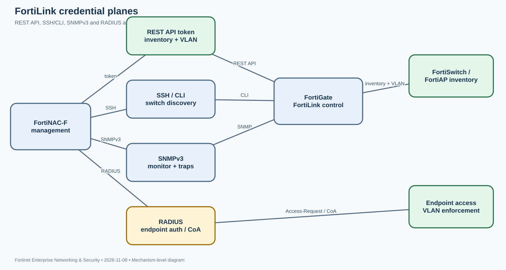
The operational trap. After upgrading FortiNAC-F or FortiOS, administrators may see a new FortiGate API Token field and assume that the REST API token replaces the existing CLI and SNMP credentials. It does not. FortiNAC communicates with a FortiGate-managed FortiLink fabric using several protocol planes that perform different jobs. Removing one because another has been added can break switch discovery, monitoring, VLAN control, or endpoint authentication.
Four planes, four responsibilities. The FortiGate REST API token authenticates API calls used to populate managed FortiSwitch/FortiAP inventory, read MAC and IP/ARP information, read VLAN state, and change VLAN assignments on managed FortiSwitch ports. The SSH/CLI System Administrator account remains important for FortiGate CLI operations and FortiSwitch discovery. SNMPv3 supplies monitoring, visibility and trap/notification functions that are not replaced by REST API polling. RADIUS remains the endpoint authentication and dynamic-VLAN enforcement protocol; it is not a FortiNAC management credential for the FortiGate REST API.
Why version boundaries matter. FortiNAC-F 7.6.5+ integration documentation identifies the REST API key as required for current FortiOS releases, including FortiOS 7.4.8+ and 7.6.4+. The Community article, updated on 2026-11-04, explains a subtle compatibility boundary: FortiOS 7.4.5+ and 7.6.1+ changed default handling of the access_token URL parameter. Some FortiNAC VLAN-control operations used that transport in affected integrations. The historical workaround was set rest-api-key-url-query enable. However, the same article explicitly states that FortiOS 8.0 removes this command and no longer permits the query-parameter method. Therefore, do not apply the old workaround to FortiOS 8.0; use the current FortiNAC-F/FortiOS integration guidance for the supported token transport.
config system global
set rest-api-key-url-query enable
endCredential setup. Create a dedicated REST API Administrator on the FortiGate. Use the minimum profile needed: read access for visibility-only use, and read/write access where FortiNAC must control VLANs on switch ports. Restrict Trusted Hosts to the FortiNAC management address. The API token is displayed once when created, so copy it securely and place it in the FortiGate Model Configuration under Network > Inventory. Retain the System Administrator CLI account and SNMPv3 configuration. Configure RADIUS separately for endpoint authentication, dynamic VLAN assignment and de-authentication/CoA.
How to reason from symptoms. If managed FortiSwitches are not discovered, check that the CLI credentials are present; the integration guide states that switches may not be discovered until they are added. If VLAN reads or writes fail, inspect the REST API token, its profile scope, Trusted Hosts and the FortiOS version-specific token transport. If SNMP monitoring or traps disappear, restore SNMPv3 rather than rotating the REST token. If endpoint authentication or dynamic VLAN assignment fails, inspect the RADIUS path and returned attributes; neither SSH nor the REST token performs the 802.1X/MAB authentication transaction.
Evidence pattern. Inspect the FortiGate model's credential tabs and verify that all required fields remain populated. Compare Network Inventory with the actual FortiLink switch/AP inventory. Review FortiNAC output.master and API polling logs for HTTP status and failed calls. The Community scenario notes that on affected pre-8.0 releases, a VLAN-change attempt can result in the token being cleared from the FortiNAC model when the required legacy URL-parameter setting is absent. Treat that as a version-specific symptom, not a universal API-token failure. A successful API read does not prove that CLI discovery or SNMP traps work.
Security and upgrade guidance. Query-string credentials can appear in logs and intermediaries; if a legacy release requires the compatibility option, evaluate the exposure carefully and combine HTTPS, Trusted Hosts and restricted management access. Before moving to FortiOS 8.0, verify the FortiNAC-F release and supported token transport. Do not carry a pre-8.0 workaround forward blindly. The safe architecture retains REST API, CLI and SNMPv3 as separate management channels and RADIUS as the endpoint access-control channel.
Scenario/community source: https://community.fortinet.com/fortinac-f-57/understanding-the-fortigate-api-key-in-fortinac-f-v7-6-6-for-fortiswitch-and-fortiap-integrations-230007
SCEP with Microsoft Intune and Entra ID-backed EAP-TLS: OAuth challenge generation, certificate binding, and SAML group-to-RADIUS policy
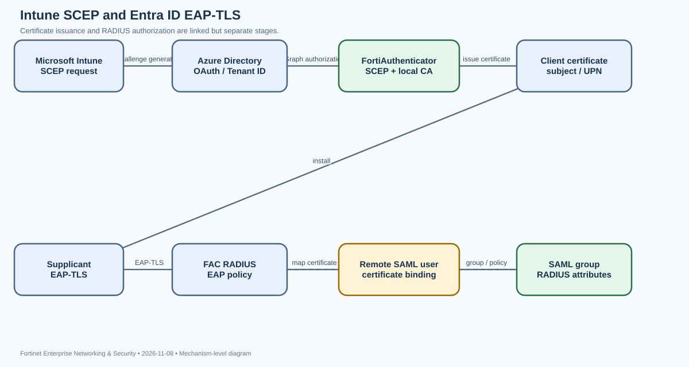
Purpose. FortiAuthenticator 8.0 adds an integration path for Microsoft Intune SCEP certificate distribution and EAP-TLS authentication using Entra ID-backed users and groups. The important design point is that certificate enrollment, user identity binding, and RADIUS authorization are distinct stages. A certificate can be issued successfully while the later RADIUS policy still fails to identify the user or return the intended group attributes.
Enrollment path. FortiAuthenticator's SCEP service must be enabled, and HTTP access must be enabled on the interface that serves SCEP clients. The enrollment request is associated with a valid local CA. In Certificate Management > SCEP > Enrollment Requests, create a request and select InTune as the challenge-password generation method. That option uses a remote OAuth server of type Azure Directory with a non-empty Tenant ID to communicate with Microsoft Graph. The enrollment request also defines subject information, validity, hash algorithm, renewal behavior and optional SAN/UPN mappings. The request is not simply an arbitrary certificate template; it is a policy object that controls how the SCEP challenge and resulting certificate are constructed.
Challenge password and OAuth dependency. The InTune option appears only when an eligible Azure Directory OAuth server is available. If the dropdown is empty, inspect the remote OAuth server type and Tenant ID before troubleshooting Intune. The 8.0.3 enrollment guide explicitly notes that Intune SCEP enrollment is not supported for Azure Government tenants (GCC, GCC High, GCC DoD). This is a product boundary, not a certificate-format problem. The enrollment request status can be Pending, Approved or Rejected; the list exposes issuer, subject, method and update time. Use these fields to distinguish an enrollment request that never reached approval from a certificate that was issued but later rejected by EAP-TLS.
Identity and authorization path. FortiAuthenticator 8.0 adds a Certificate Bindings pane for remote SAML users, a RADIUS Attributes pane for SAML user groups, and support for SAML realms and remote SAML group filters in RADIUS policies. The practical chain is: SCEP issues a client certificate; the presented certificate is bound to a remote SAML user; the user is associated with a SAML group; the group contributes RADIUS attributes; and the selected RADIUS policy determines which attributes are returned. The certificate is the proof used in EAP-TLS, while the SAML user/group relationship supplies identity and authorization context. Do not assume that an Entra ID group automatically becomes a RADIUS attribute without configuring the group and policy mapping.
Configuration sequence. Configure the Azure Directory OAuth server and verify its Tenant ID. Enable SCEP and HTTP on the serving interface. Confirm that the local CA is valid and current. Create the enrollment request with InTune challenge generation and the intended subject/UPN mapping. Configure remote SAML users with certificate bindings. Configure the relevant SAML user groups with RADIUS attributes. Finally, add the SAML realm and remote group filter to the RADIUS policy. Test SCEP enrollment separately from EAP-TLS authentication so a failure can be localized to the certificate lifecycle or the RADIUS authorization stage.
Observables. The SCEP Enrollment Requests table shows request state, issuer and subject. Inspect the issued certificate for the expected subject, SAN and UPN mapping. During EAP-TLS, confirm that the client presents a chain trusted by FortiAuthenticator and that the remote user binding matches the certificate identity. In RADIUS session and policy logs, verify the selected realm, group filter and returned attributes. A certificate that chains to the correct CA proves cryptographic trust, but not that the correct Entra ID group was selected. A RADIUS Access-Accept proves the policy accepted the request, but not that the downstream network device interpreted the returned attributes as intended.
Failure isolation. A missing SCEP endpoint points to service enablement or interface access. A missing Intune dropdown points to OAuth server type or Tenant ID. A rejected request points to CA validity, subject fields, challenge or renewal policy. A successful certificate with failed EAP-TLS points to trust, certificate binding, user/group mapping or RADIUS policy selection. If EAP-TLS succeeds but the endpoint lands in the wrong VLAN, inspect returned RADIUS attributes and the network device's attribute handling. Keep certificate issuance, identity binding, RADIUS policy and VLAN enforcement as separate test checkpoints.
Lifecycle caveats. Plan certificate renewal and revocation explicitly. The enrollment guide exposes controls for renewal windows and whether expired/revoked certificates or old-key-signed renewal requests are accepted. Do not widen renewal acceptance simply to resolve an enrollment backlog. The integration improves automated certificate distribution, but it also makes OAuth tenant identity, certificate binding and group policy part of the network access trust chain.
FortiPAM 1.9 agentless web launchers: browser tab-sharing consent, recording upload, and launcher limitations
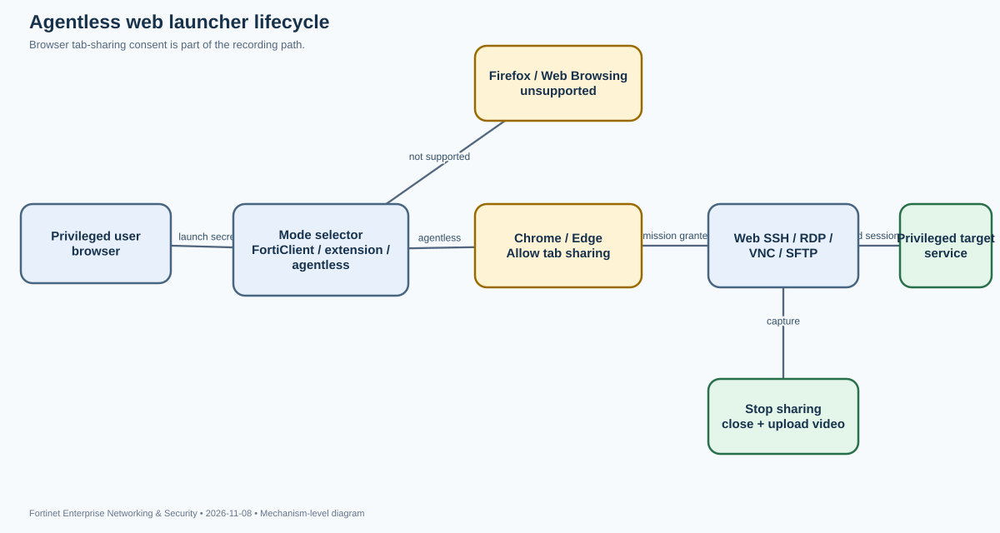
Purpose. FortiPAM 1.9 agentless mode allows supported web-based secret launchers to run without installing FortiClient or the Fortinet Privileged Access Agent browser extension on the endpoint. It reduces endpoint deployment dependencies for browser-based privileged sessions, but it is not a universal launcher mode. It has explicit browser, launcher and recording-permission boundaries that matter when a user reports that a session opens but video evidence is missing.
Mode selection. The FortiPAM banner exposes Automatic, Extension and Agentless modes. Automatic attempts FortiClient first, then the browser extension, then agentless. Extension mode forces use of the extension for supported web-based launchers and recording. Agentless mode launches the supported web-based secrets without either local component. The selector does not change native launcher behavior. It also does not make every secret type agentless: the 1.9 guide excludes Web Browsing and lists Web SSH, Web RDP, Web VNC, Web SFTP, Web SMB and Web Telnet as supported. Chrome and Edge are supported; Firefox is not.
Tab-sharing transaction. When an agentless session launches, the browser displays a permission prompt asking whether the FortiPAM URL may see the tab. The user must select Allow for secret video recordings to work. Once launched, a header displays the session lifetime and a Stop sharing control. Selecting Stop sharing terminates the secret session and uploads the recording. Closing the browser tab also terminates the session. If multiple secrets are open, multiple sharing headers may appear. The Stop sharing control is not cosmetic; it is part of the session and recording lifecycle.
macOS permission boundary. On macOS, the browser requires Screen & System Audio Recording permission for agentless mode. If that permission is absent, the browser can block the capture path even when the user can authenticate and open the secret. This is a host operating-system privacy control, not a FortiPAM secret permission. The correct response is to grant the browser permission through the macOS privacy settings and repeat the recording test, not to broaden the user's secret role.
Operational configuration. In the banner, select Agentless to force that path during testing, or leave Automatic and verify which client component actually handled the launch. Use a supported browser and one of the listed web launchers. Have the user accept the tab-sharing prompt. Confirm the session header appears and that the lifetime advances. End the session with Stop sharing and then check that the video is available in the appropriate FortiPAM log/session view. Test Web RDP resolution expectations separately: the guide states that resolution is not supported in agentless mode.
What the evidence proves. The Allow prompt proves the browser is being asked to share the tab with FortiPAM; it does not prove that the user accepted it. The Stop sharing header proves a sharing session exists; it does not prove that the video upload completed. A recording appearing after Stop sharing is stronger evidence that the session was closed and uploaded. A missing recording with a successful launch should first direct attention to tab-sharing consent and macOS permissions rather than target credentials.
Failure isolation. If the launcher is unavailable, check whether the selected secret uses a supported web launcher and whether the browser is Chrome or Edge. If Automatic mode is used, inspect whether FortiClient or the extension took precedence; a test of agentless behavior should explicitly select Agentless. If a session opens but recording is absent, verify Allow consent, browser tab state and macOS Screen & System Audio Recording permission. If Web RDP opens with unexpected resolution behavior, remember that the limitation is documented. If the user needs Web Browsing or a native launcher, use the supported deployment mode rather than expecting agentless mode to cover it.
Security and operations. Agentless mode reduces local software requirements but relies on browser-mediated tab sharing. Administrators should explain the consent prompt and Stop sharing behavior to users, ensure sessions are closed cleanly, and verify recordings after the first production launch. Do not equate agentless mode with direct/non-proxy mode; the former is a launcher deployment choice, while proxy mode determines how FortiPAM handles traffic and credentials. Keep those settings separate in troubleshooting and policy design.
AWS Security Hub integration: regional findings ingestion, SDK credential scope, and FortiSIEM discovery
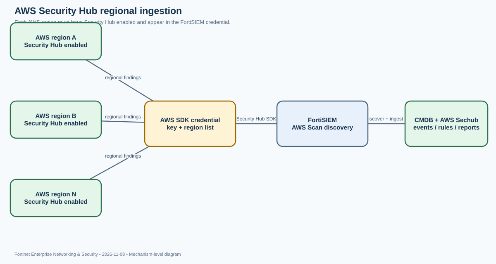
Purpose. FortiSIEM can ingest findings collected by AWS Security Hub so that security posture and findings from AWS accounts and services can be correlated with the rest of the enterprise environment. The integration is not a generic syslog receiver. FortiSIEM uses the AWS Security Hub SDK and the PHP V3 SDK to retrieve Security Hub data. This means the integration depends on IAM authorization, AWS region scope, credential configuration and discovery.
Regional boundary. Security Hub collects findings in the AWS regions where it is enabled. Enabling Security Hub in one region does not cause findings from every other region to appear. FortiSIEM allows multiple region codes in a credential, but each selected region must have Security Hub enabled. A common operational mistake is to test connectivity in us-east-1, see events, and conclude that the integration is complete while workloads in eu-west-1 remain invisible. The missing events may be an AWS service enablement issue rather than a FortiSIEM parser issue.
FortiSIEM object model. The integration uses a credential definition with Device Type Amazon AWS Security Hub and Access Protocol AWS Security Hub SDK. The credential stores the access key material and one or more AWS region codes. FortiSIEM's discovery process uses that credential to query Security Hub, create or update the corresponding CMDB object, and associate the integration's event types, rules and reports. The External Systems Configuration Guide lists the event types under the “AWS Sechub” search term in Resources > Event Types.
Configuration workflow. First enable Security Hub in every intended region using an AWS identity with the documented permissions. Create an access key for the integration identity and scope it to the Security Hub resources and actions required by the current FortiSIEM guide. In FortiSIEM, go to Admin > Setup > Credentials, create a credential, select the AWS Security Hub device type and SDK access protocol, and enter the region codes separated by spaces. Associate the credential with the intended AWS target, run Test Connectivity, then create or select an AWS Scan discovery definition and run Discover. Verify the discovered object under the Amazon Web Services portion of the CMDB.
Least privilege and credential hygiene. The documentation describes the permissions required to enable Security Hub and the access-key setup. Separate the one-time service-enablement identity from the ongoing read/collection identity where possible. Do not use an administrator's personal access key. Keep access keys in the credential store, rotate them according to organizational policy, and restrict the IAM policy to the regions and actions actually needed. If the integration is denied, use AWS CloudTrail to identify the exact denied action before broadening IAM permissions.
Evidence and interpretation. Successful Test Connectivity proves that FortiSIEM can authenticate and reach the configured service endpoint; it does not prove that Security Hub is enabled in every selected region or that findings exist. A CMDB object proves discovery created an inventory record. Events appearing under the AWS Sechub event types prove the collection and parsing path is producing FortiSIEM events. If one region has events and another does not, compare Security Hub enablement and the region list before changing parsers. If no regions work, inspect access key validity, IAM denials, region codes and network egress.
Failure isolation. A failed connectivity test is usually credential, IAM or transport. A successful test with no events suggests region enablement, empty findings, discovery scheduling or collection scope. A CMDB object with stale event time suggests collection or polling rather than initial discovery. A missing event type or unexpected fields should be investigated only after the AWS API returns findings. Use AWS-side evidence to separate “no findings exist” from “FortiSIEM did not collect them.”
Operational design. Maintain an explicit region inventory and compare it with the FortiSIEM credential. When AWS accounts or regions are added, update Security Hub enablement and the credential's region list as one change. Validate one known finding in each region and verify the resulting FortiSIEM event, rule and report behavior. This prevents a green connectivity test from masking a regional coverage gap.
Inline-CASB application detection and SaaS tenant restriction: deep inspection, HTTP header insertion, and per-application overrides
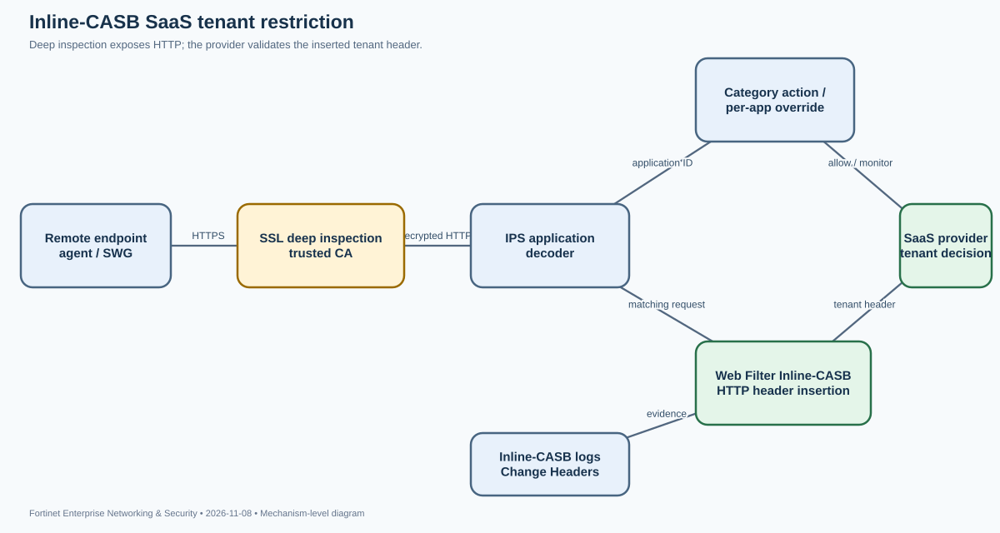
Purpose and distinction. Inline-CASB places application-aware controls in the traffic path between a remote user and a SaaS provider. It differs from an API-based CASB that queries a cloud service out of band. FortiSASE uses IPS protocol decoders to recognize application traffic, including traffic on non-standard ports, and supports HTTP/1.0, HTTP/1.1 and HTTP/2 detection. SSL deep inspection exposes HTTPS content so the platform can identify the SaaS application and, with Web Filter Inline-CASB, modify HTTP headers used by the provider for tenant restrictions.
Two related but distinct controls. Application Control With Inline-CASB applies category-level actions: Allow, Monitor or Block. Allow passes traffic to web filtering, antivirus and DLP inspection. Monitor processes the traffic like Allow but logs each matching pattern. Block denies attempts to access applications in the category. Application Overrides can set an individual application to a different action than its category. Separately, Web Filter with Inline-CASB can insert or remove HTTP headers on matching SaaS requests/responses. Category control decides whether an application is permitted; header insertion can constrain which tenant or organization the user may access within an otherwise allowed application.
Inspection dependency. HTTPS tenant headers cannot be inserted when the platform only performs certificate inspection. The matching policy must use SSL deep inspection and the endpoint must trust the FortiSASE CA certificate. The Web Filter with Inline-CASB and Application Control with Inline-CASB must be enabled in the security profile group attached to the policy that actually matches the SaaS traffic. Fortinet recommends enabling a companion security feature such as antivirus, file filter, DLP, web filter or DNS filter; behavior is not guaranteed when other security features are disabled. QUIC can also bypass the expected HTTP inspection path unless it is handled according to the deployment guide.
Tenant-restriction workflow. Create FQDN address objects or groups for the SaaS domains. Configure an Inline-CASB header rule with the provider-specific header name, allowed tenant identifier value, action Add to request, and the destination group. Assign the profile group to the FortiSASE policy matching agent-based traffic or to the relevant SWG proxy policy for agentless users. The SaaS provider validates the inserted header and decides whether the account belongs to an allowed workspace or organization. The network device does not create the tenant identity; it conveys the allowlist value for the provider to enforce.
Evidence. Use Operations > Logs > Security > Web Filter with Inline-CASB. Add the Change Headers column and inspect the log Details to confirm the header that was inserted. FortiView Cloud Applications can show application access attempts. Test a corporate account and a disallowed personal account separately. A successful corporate login and rejected personal login demonstrate the provider-side tenant decision, while the log's header detail proves FortiSASE inserted the expected value. A Block action in Application Control would instead deny the whole application and cannot be used to prove tenant-specific restriction.
Common failure modes. If application detection is missing, verify that traffic traverses FortiSASE, deep inspection is enabled, the CA is trusted, and the matching policy has the correct profile group. If the application is detected but the header is absent, inspect the Web Filter Inline-CASB rule, destination FQDN match and header action. If all accounts are rejected with HTTP 400, validate the header syntax and UUID format; malformed tenant identifiers can cause the provider to reject requests. If a user can bypass the control from another network or unmanaged device, remember that a network-based policy only controls traffic that traverses FortiSASE.
Design caveats. Vendor header semantics differ. ChatGPT workspace IDs and Claude organization IDs are not interchangeable, and the set of identities that can be allowlisted differs by provider. Maintain provider-specific header values and destination groups, and verify them with the SaaS vendor's current tenant-restriction documentation. Combine the network control with identity-side SSO enforcement and domain capture where available. Inline-CASB improves control of SaaS traffic, but it does not replace identity governance or guarantee control of traffic that bypasses the service.
SD-WAN Setup Wizard: license-gated generation of zone, members, SLA and service rule with a separate default-route step


What the wizard does—and does not do. The FortiOS 8.0 SD-WAN Setup Wizard creates a simple SD-WAN baseline: a zone, up to two underlay members, network gateway and priority settings, a Performance SLA health check, and an SD-WAN service rule. It is a guided object-creation workflow, not a complete branch cutover. Fortinet explicitly states that a default static route for the newly created SD-WAN interface must be configured after the wizard completes. A completed wizard therefore does not prove that default traffic will use SD-WAN.
Entitlement and scope. The wizard is visible only when the FortiGate has valid SD-WAN Underlay and Application Monitoring licenses. It supports a maximum of two interfaces. If a site needs three or more underlays, use the full SD-WAN configuration workflow rather than trying to force the wizard beyond its design scope. The wizard can use an existing SD-WAN zone or create a new one. Selected interfaces become SD-WAN members of that zone.
Generated object sequence. The Interface step selects the zone and one or two underlay interfaces. The Networking step defines each interface's gateway and priority. Gateway can be dynamic or specified as an IPv4/IPv6 address. Cost is used by the lowest-cost SLA strategy; the lower cost wins when qualifying members tie. Fallback priority is used in the static route created for member interfaces and in SD-WAN rules, with the lower value taking precedence. These values are not cosmetic: they influence the path chosen when multiple members are eligible.
Performance SLA stage. The wizard offers a FortiGuard predefined target or a manually defined server. The health check measures link quality for the selected members. A probe target must be reachable through the intended path and should represent the application or service being steered. A generic Internet target may not represent the reachability of a private application. The wizard then creates a service rule or allows the administrator to skip rule creation and use the implicit rule. Available strategies include Best Quality, Lowest Cost (SLA), and Maximize Bandwidth. Best Quality selects the best measured link; Lowest Cost (SLA) selects links that meet SLA targets and uses cost as a tie-breaker; Maximize Bandwidth distributes traffic among links that meet SLA targets.
Critical post-wizard step. After Apply, inspect the created zone, members, health check and service rule. Then go to Network > Static Routes and create a default route pointing to the SD-WAN zone/interface. The wizard does not create that route for you. The normal firewall policy must also permit the traffic and reference the intended outgoing SD-WAN zone. Without the route, traffic can continue to follow an existing default route even though the SD-WAN objects look correct.
Verification. Confirm the SD-WAN zone contains the expected members, each member has the intended gateway and cost/priority, the Performance SLA is measuring the intended server, and the service rule matches the actual source/destination/application. Then inspect the routing table and static route list to verify that the default route points to the SD-WAN zone. Finally, generate a test session and confirm the selected member. A green SLA status proves that the probe meets the configured thresholds; it does not prove that the route or firewall policy sends every application through that member.
Failure isolation. If the wizard is missing, check both required licenses. If the wizard completes but traffic does not use SD-WAN, inspect the separate default route and firewall policy before changing SLA thresholds. If the wrong member is selected, check gateway reachability, cost, fallback priority, SLA target relevance and service-rule matching. If only one member is eligible, inspect the health-check result and routing to the target. Do not interpret the review screen as proof that the generated route and policy are operational.
Operational use. The wizard is suitable for bootstrapping a simple two-underlay branch and teaching the object relationships. It should be followed by a controlled validation of route installation, policy matching, SLA measurement and failover. For larger or more complex topologies, use the full configuration tools so that zone design, application steering and routing dependencies can be expressed explicitly.
GRADED EXAMINATION
50 Multiple-Choice Questions
Each question is worth one point. Select one answer per question, then grade the exam. After grading, the explanation for every choice is shown, including why distractors are incorrect.